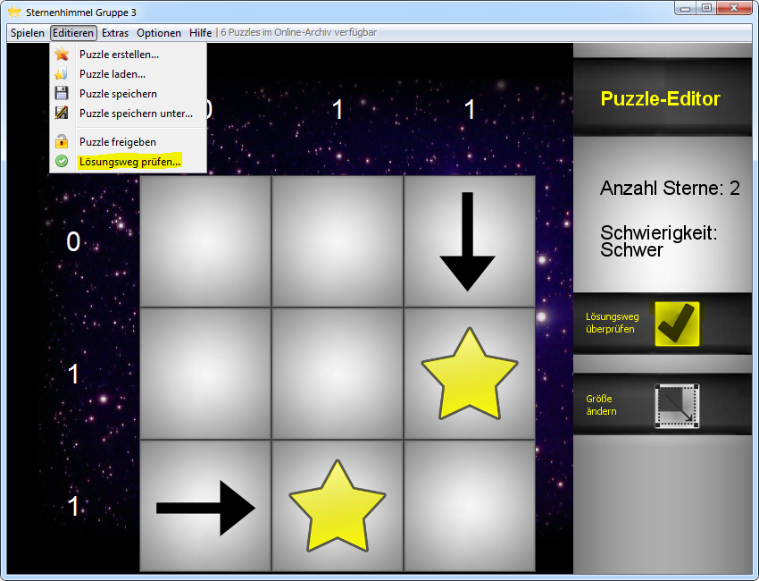
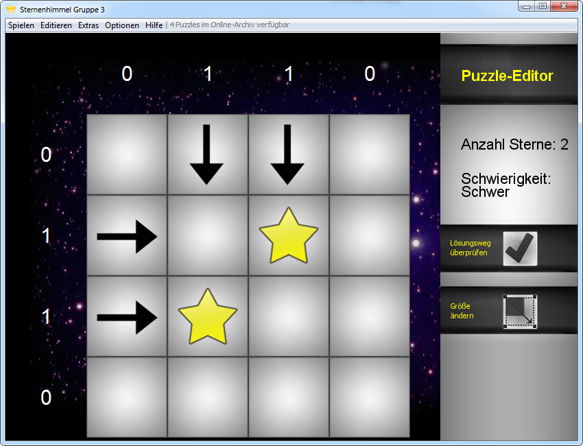
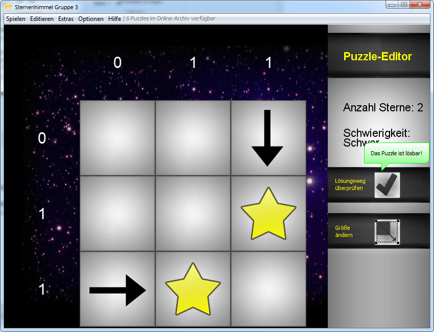
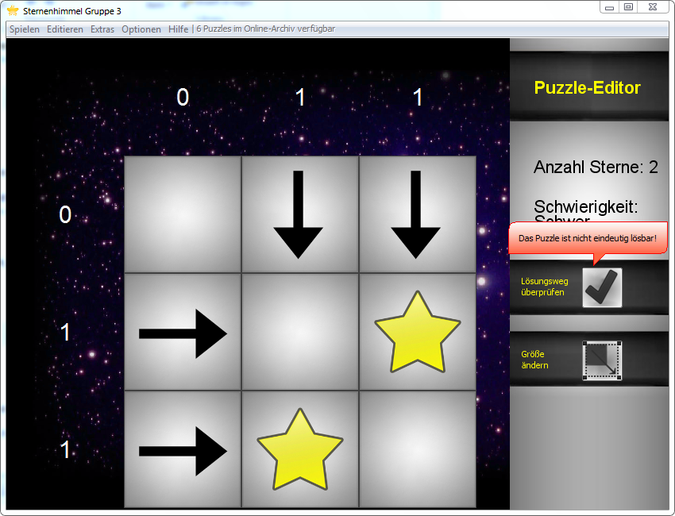
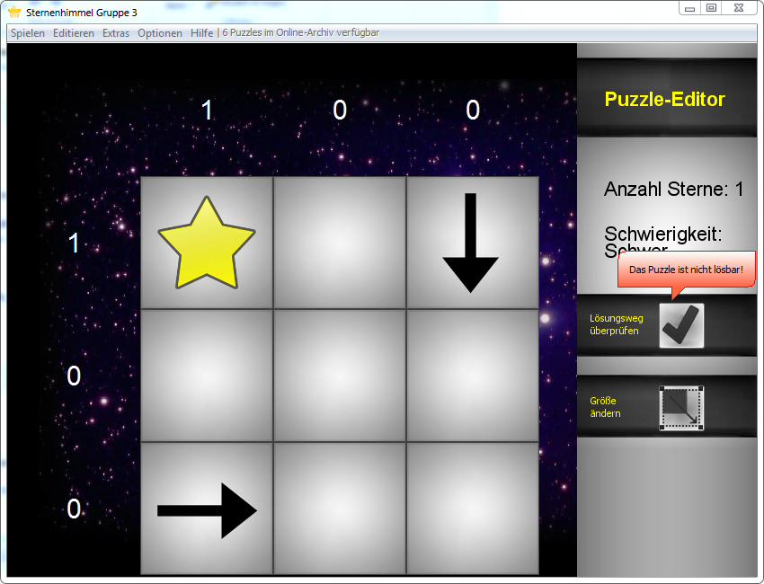

Im Puzzle-Editor wird über das Menü "Editieren - Lösungsweg prüfen" oder die Schaltfläche "Lösungsweg überprüfen" das Puzzle auf Lösbarkeit überprüft. Ein Puzzle muss eindeutig lösbar sein, damit dieses zum Spielen freigegeben werden kann.

Damit ein Puzzle eindeutig lösbar ist, muss auf jeden Stern mindestens ein Pfeil zeigen, jeder Pfeil muss auf mindestens einen Stern zeigen. Hier ein Beispiel eines nicht eindeutig lösbaren Puzzles:

Der Stern links unten könnte genauso ein Feld höher sitzen, während der Stern oben rechts ein Feld tiefer sitzen könnte.
Ein Hinweis an der Schaltfläche "Lösungsweg überprüfen" zeigt die Lösbarkeit eines Puzzles an.
Lösbares Puzzle:

Nicht eindeutig lösbares Puzzle:

Nicht lösbares Puzzle:

Created with the Personal Edition of HelpNDoc: Free iPhone documentation generator